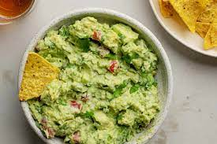

Guacamole

An avacado based dip
This dish filled with avacados, onions, tomatoes, garlic, and cilantro is great for any fiesta!
Ingredients:
- Avacados
- Onions
- Tomatoes
- Garlic
- Cilantro
Steps:
- Slice the avocados in half, remove the pit, and scoop into a mixing bowl.
- Mash the avocado with a fork and make it as chunky or smooth as you’d like.
- Add the remaining ingredients and stir together. Give it a taste test and add a pinch more salt or lime juice if needed.
- Serve the guacamole with tortilla chips.